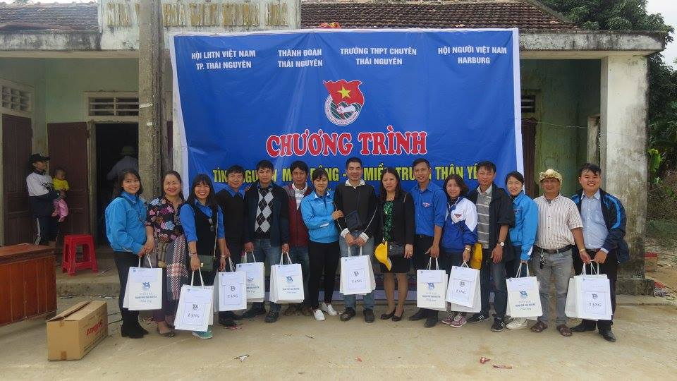
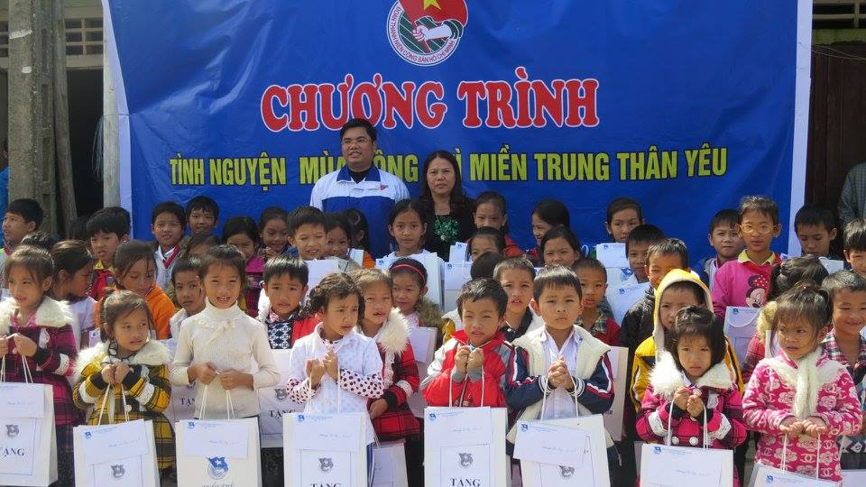
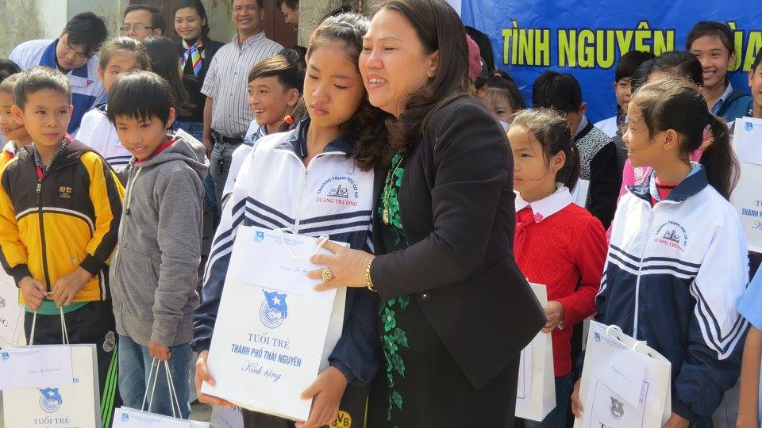
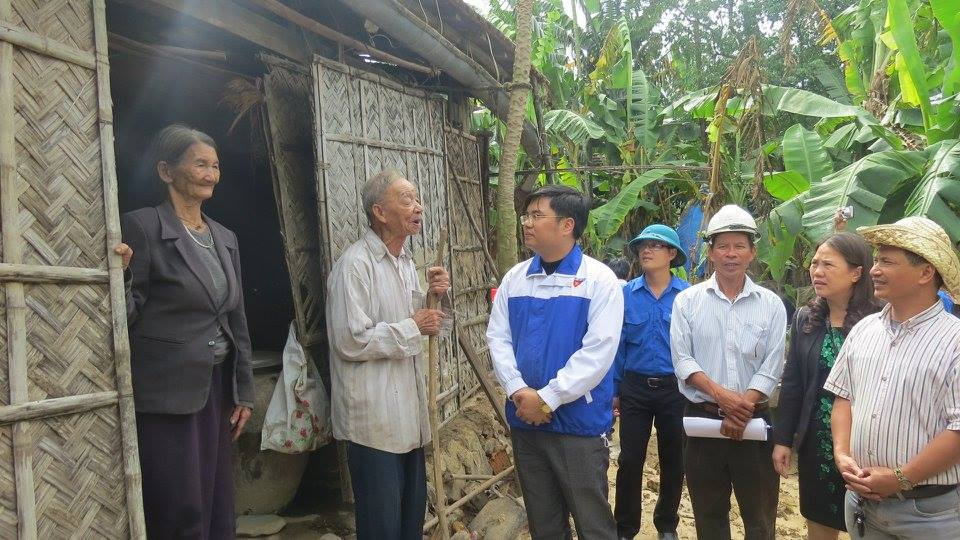
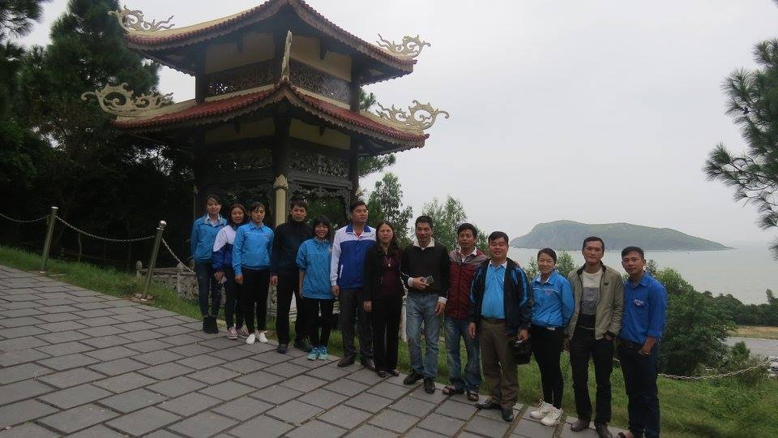

Liên đội Tiểu học Nha Trang tham gia hoạt động tình nguyện tại vùng lũ Quảng Trạch, tỉnh Quảng Bình.
Hưởng ứng cuộc vận động giúp đỡ đồng bào các tỉnh Miền Trung khắc phục thiên tai do mưa lũ, trong 2 ngày 11-12/11/2016 Thành đoàn Thái Nguyên đã tổ chức chương trình tình nguyện đến thăm hỏi, động viên và tặng quà nhân dân bị ảnh hưởng nặng nề của trận lũ vừa qua tại Thôn Thuận Hòa, xã Quảng Trường, huyện Quảng Trạch, tỉnh Quảng Bình. Tham gia chương trình có đại diện của Hội LHTN thành phố, Trường THPT Chuyên Thái Nguyên, Hội người Việt Nam tại HamrBurg (nước Đức), Liên đội TH Nha Trang, do đồng chí Mai Hải Trung - Bí thư Thành đoàn làm trưởng đoàn.

Đoàn tình nguyện tại Thôn Thuận Hòa - Quảng Trường - Quảng Bình
Trong chương trình Tuổi trẻ TP. Thái Nguyên 600 triệu dành tặng bà con vùng lũ Quảng Trạch, tỉnh Quảng Bình. Liên đội tiểu học Nha Trang đã ủng hộ số tiền 20.000.000đ cho chương trình tại lễ phát động. Ngoài ra, Liên đội TH Nha Trang cũng trao 2 xuất quà trị giá 1.500.000đ cho học sinh có hoàn cảnh khó khăn là em Mai Thị Mai lớp 7 trường THCS Quảng Trường và 1 gia đình có 2 con bị bệnh nặng.

Đ/c Mai Hải Trung-BT Thành Đoàn và đ/c Phạm Thị Bích - HT nhà trường tặng quà cho các em thiếu nhi có hoàn cảnh khó khăn tại địa phương

Đ/c Phạm Thị Bích - HT nhà trường tặng quà cho em Mai Thị Mai - HS lớp 7 trường THCS Quảng Trường

Đoàn tình nguyện thăm và tặng quà gia đình có hoàn cảnh đặc biệt khó khăn tại địa phương

Đoàn tình nguyện thăm và viếng mộ đại tướng Võ Nguyên Giáp
Kết thúc chương trình, đoàn tình nguyện tiếp tục lên đường tới viếng mộ Đại tướng Võ Nguyên Giáp. Đây là hoạt động ý nghĩa thiết thực của Tuổi trẻ thành phố nói chung và Liên đội TH Nha Trang nói riêng cùng các đơn vị và nhà tài trợ góp phần động viên bà con nhân dân vừa bị thiệt hại trong mùa lũ sớm ổn định cuộc sống.